Heads Up!
This project is in Beta. That means we’re still testing it, and there’s a small chance there could be some bugs or typos. If you’re a club leader trying out this project, please complete this short questionnaire (or email ) to let us know how it went!
Introduction
You are going to learn how to program your own talking robot!
Step 1: Your chatbot
Activity Checklist
Before you start making your chatbot, you need to decide on their personality.
- What is their name?
- Where do they live?
- Are they happy? serious? funny? shy? friendly?
- What is their name?
Start a new project, and delete the cat sprite, so that your project is empty.
Choose a sprite and a backdrop that fit your chatbot’s personality. Here’s an example, although yours doesn’t have to look like this:

Save your project
Step 2: A talking chatbot
Now that you have a chatbot with a personality, let’s program it to talk to us.
Activity Checklist
Click on your chatbot character, and add this code:
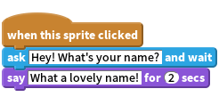
Click your chatbot to test it out. After you are asked your name, type it into the box along the bottom of the stage, and click the tick (or press return).

Your chatbot simply replies “What a lovely name!” every time. You can personalise your chatbot’s reply, by making use of the user’s answer. Change the chatbot’s code, so that it looks like this:
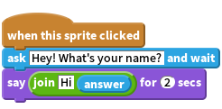
To create the last block, you’ll need to first drag on a green
joinblock, and drag it on to thesayblock.
You can then change the text “hello” to say “Hi”, and drag the light blue
answerblock (from the ‘Sensing’ section) onto the text “world”.Test out this new program. Does it work as you expected? Can you fix any problems that you can see? (Hint: you can try adding in a space somewhere!)
It may be that you want to store the user’s name in a variable, so that you can use it again later. Create a new variable called ‘name’. If you’ve forgotten how to do this, the previous ‘Balloons’ project will help you.
Once you’ve created your new variable, make sure that your chatbot’s code looks like this:
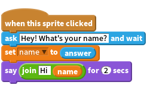
If you test your program again, you’ll notice that the answer is stored in the ‘name’ variable, and is shown in the top-left of the stage.

If you’d rather not see the variable on your stage, you can click the tick next to the variable name in the ‘Scripts’ tab to hide it.
Save your project
Challenge: More questions
Program your chatbot to ask another question. Can you store their answer in a variable?

Save your project
Step 3: Making decisions
You can program your chatbot to decide what to do, based on the user’s responses.
Activity Checklist
Let’s get your chatbot to ask the user a question which has a ‘yes’ or ‘no’ answer. Here’s an example, but you can change the question if you like:
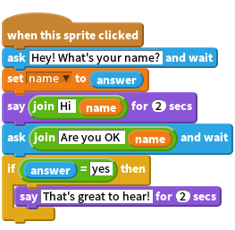
Notice that now you’ve stored the user’s name in a variable, you can use it as much as you like.
To test this program properly, you’ll need to test it twice - once typing ‘no’ as your answer, and once typing ‘yes’. You should only get a response from your chatbot
ifyou answer ‘yes’.The trouble with your chatbot is that it doesn’t give a reply if the user answers ‘no’. You can fix this, by changing the
ifblock to anif/elseblock, so that your code now looks like this: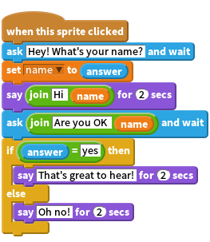
If you test your code, you’ll now see that you get a response when you answer ‘yes’ or ‘no’. Your chatbot should reply with “That’s great to hear!” when you answer ‘yes’, but will reply with “Oh no!” if you type anything other than yes (
elsemeans ‘otherwise’).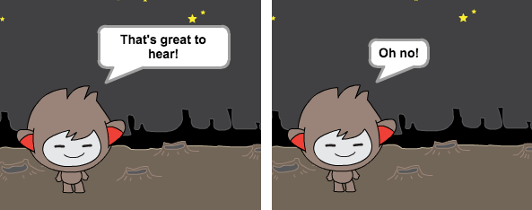
You can put any code inside an
iforelseblock, not just code to make your chatbot speak. For example, you can change the chatbot’s costume to match the response.If you have a look at your chatbot’s costumes, you may see that there is more than one. (If not, you can always add more yourself!)
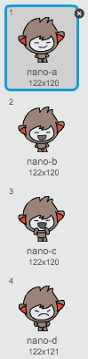
You can use these costumes as part of your chatbot’s response, by using this code:
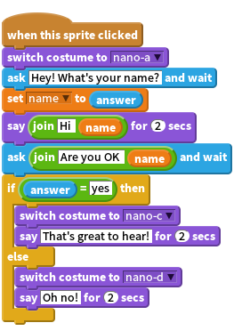
Test out your program, and you should see your chatbot’s face change depending on the answer you give.
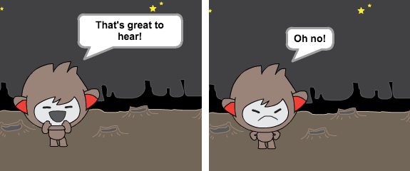
Save your project
Challenge: More decisions
Program your chatbot to ask another question - something with a ‘yes’ or ‘no’ answer. Can you make your chatbot respond to the answer?

Save your project
Step 4: Changing location
You can also program your chatbot to change its location.
Activity Checklist
Add another backdrop to your stage, and make sure that it has a useful name (for example ‘bedroom2’).
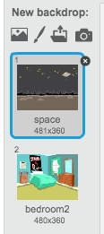
You can now program your chatbot to change location, by adding this code to your chatbot:
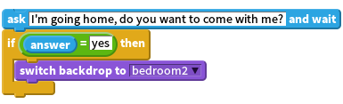
You also need to make sure that your chatbot is outside when you start talking to it. Add this block to the top of your chatbot code:
Test your program, and answer ‘yes’ when asked if you want to go home. You should see that the chatbot’s location has changed.

Does your chatbot change location if you type ‘no’? What about if you type ‘I’m not sure’?
Save your project
Challenge: Make your own chatbot
Use what you’ve learnt to finish creating your interactive chatbot. Here are some ideas:

Once you’ve finished making your chatbot, get your friends to have a conversation with it! Do they like your character? Did they spot any problems?